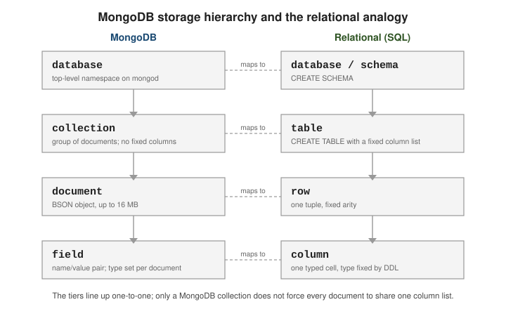

What MongoDB is & how to run it
|
This content was generated with the assistance of AI and should be verified against the official documentation before being relied on in production. |
MongoDB is a general-purpose database that stores records as JSON-like documents rather than as rows in fixed tables. It aims to be a primary datastore for operational applications — the same role a relational database usually fills — while letting the shape of each record vary and letting a deployment scale horizontally across many machines. This page explains the model and its trade-offs, then walks through running a local server and driving it from the shell.
The document model and where it fits
A MongoDB deployment holds one or more databases; each database holds collections; each collection holds documents; each document is a set of field/value pairs. The tiers map cleanly onto the relational vocabulary, with one difference: a collection does not impose a single column list on the documents it holds.

A document that models an order can embed its line items as an array instead of splitting them into a separate table:
{
"_id": 1001,
"customer": { "id": 42, "name": "Ada Lovelace" },
"status": "OPEN",
"items": [
{ "sku": "A-1", "qty": 2, "price": 9.99 },
{ "sku": "B-7", "qty": 1, "price": 19.00 }
]
}The trade-offs that follow from this model:
-
Flexible schema. Two documents in one collection may carry different fields. Structure is still real — it lives in the application and, optionally, in a JSON Schema validator attached to the collection — but the database does not require you to declare it up front or migrate every record when it changes.
-
Horizontal scale. A collection can be sharded across many servers on a shard key, spreading both data and load. See Sharding.
-
No server-side joins by default. Related data is usually embedded in the same document and read in one operation. Cross-collection joins exist through the
$lookupaggregation stage, but they are not the primary access pattern; Data modeling covers embed-versus-reference.
For a narrative overview, see Introduction to MongoDB and the Getting Started tutorial in the manual.
How the pieces fit together
Before running anything it helps to know which process does what. Applications never touch data files: they
speak the MongoDB wire protocol to a mongod server through a driver (or through mongosh, Compass, or a
Database Tools command, which are all clients too). Inside mongod, a command is parsed, the query planner
chooses an index or a collection scan, the executor runs the plan, and the storage engine (WiredTiger) reads
and writes pages in its cache, protected by a write-ahead journal.
Two consequences follow. First, everything a driver can do, mongosh can do too, so every example on these
pages can be pasted into a shell. Second, the unit of deployment is the mongod process: one process is a
standalone; several cooperating processes form a replica set (see
Replica Sets & High Availability) or a sharded cluster (see
Horizontal Scaling with Sharded Clusters).
Editions and how you run it
MongoDB ships in three forms:
-
Community Edition — the free, source-available server. Sufficient for development and for most self-managed production use.
-
Enterprise Advanced — Community plus commercial add-ons (in-memory storage engine, Kerberos/LDAP auth, auditing,
mongodbtoolssuch asmongodecrypt) and a support subscription. -
Atlas — MongoDB’s fully managed cloud service. It runs the same server and adds provisioning, backups, monitoring, and Atlas-only features (Atlas Search, Atlas Vector Search) on top. Atlas-only capabilities are linked from these pages, not documented step by step.
See Install MongoDB for packages for each platform.
Start a local mongod
mongod is the database server process. It listens on TCP port 27017 by default and needs a data
directory to exist before it starts:
mkdir -p /data/db
# Foreground server, explicit data directory and bind address.
mongod --dbpath /data/db --bind_ip 127.0.0.1 --port 27017
# Equivalent settings in a config file (mongod --config /etc/mongod.conf):
# https://www.mongodb.com/docs/manual/reference/configuration-options/# /etc/mongod.conf
storage:
dbPath: /data/db
net:
bindIp: 127.0.0.1
port: 27017Storage & durability covers the data files --dbpath
manages; Administration & monitoring covers running
mongod as a managed service.
Connect with mongosh
mongosh is the official shell. With no arguments it connects to mongodb://127.0.0.1:27017:
$ mongosh
test> show dbs
admin 40.00 KiB
config 12.00 KiB
local 40.00 KiB
test> use shop
switched to db shop
shop> db.orders.insertOne({ _id: 1001, status: "OPEN" })
{ acknowledged: true, insertedId: 1001 }
shop> show collections
orders
shop> db.orders.find()
[ { _id: 1001, status: 'OPEN' } ]show dbs lists databases, use <db> selects one (and creates it lazily on first write), show
collections lists its collections, and db.<coll>.find() reads documents. Full command reference:
the mongosh documentation. The db.<coll>.find() /
insertOne() calls are the Query API, covered in Querying documents
and Inserting documents.
mongosh is a JavaScript REPL
mongosh evaluates JavaScript. Query results are ordinary values you can assign and manipulate, and a
find() returns a cursor:
// Assign a result and work with it as a normal object.
const order = db.orders.findOne({ _id: 1001 })
order.status // 'OPEN'
// find() returns a cursor; the shell prints the first batch (20 docs) and
// leaves the cursor open. Type `it` to page through the rest.
db.orders.find({ status: "OPEN" })
// Type: it -> next batch
// Drive the cursor explicitly instead of relying on `it`.
db.orders.find().forEach(doc => print(doc._id))
// Cursor helpers: https://www.mongodb.com/docs/manual/reference/method/js-cursor/
db.orders.find().sort({ _id: -1 }).limit(5).toArray()Startup and scripting:
# ~/.mongoshrc.js runs on every interactive start -- put helpers and prompt
# tweaks there. https://www.mongodb.com/docs/mongodb-shell/reference/startup/
echo 'prompt = () => `${db.getName()}> `;' >> ~/.mongoshrc.js
# Run a script file non-interactively (exits when the file finishes).
mongosh "mongodb://127.0.0.1:27017/shop" seed.js
# Or load a file into the current interactive session.
# shop> load("seed.js")mongosh replaces the legacy mongo shell, which is no longer shipped with the server.
Hands-on: MongoDB in Docker and the running example
The quickest way to get a disposable server is the official mongo image. Every example in this section runs
against the same small online shop — a shop database with customers, products and orders — so that
the pages build on one another. The container below starts mongod as a one-member replica set: that costs
nothing locally, and it unlocks w: "majority" writes, transactions, change streams and the oplog on later
pages. (Use any free host port in place of 27017 if it is already taken.)
docker run -d --name mongo-shop -p 27017:27017 mongo:8 mongod --replSet rs0 --bind_ip_all
# one-time initiation of the single-member replica set
docker exec mongo-shop mongosh --quiet --eval 'rs.initiate({ _id: "rs0", members: [{ _id: 0, host: "localhost:27017" }] }).ok'
# 1
docker exec mongo-shop mongosh --quiet --eval 'db.version()'
# 8.3.13 (the exact patch release depends on the image tag you pull)
# clean up when you are done
docker rm -f mongo-shopSave the following script as seed.js. It drops and recreates the shop database with four customers, five
products and eight orders; every worked example on the following pages starts from this state.
// seed.js -- the running example used throughout this section
db = db.getSiblingDB("shop");
db.dropDatabase();
db.customers.insertMany([
{ _id: "c-1", name: "Ada Lovelace", email: "ada@example.com", city: "London", tier: "pro", createdAt: ISODate("2025-01-10T09:00:00Z") },
{ _id: "c-2", name: "Alan Turing", email: "alan@example.com", city: "Wilmslow", tier: "free", createdAt: ISODate("2025-02-14T10:30:00Z") },
{ _id: "c-3", name: "Grace Hopper", email: "grace@example.com", city: "New York", tier: "enterprise", createdAt: ISODate("2025-03-01T08:15:00Z") },
{ _id: "c-4", name: "Linus Torvalds", email: "linus@example.com", city: "Helsinki", tier: "free", createdAt: ISODate("2025-04-20T12:00:00Z") }
]);
db.products.insertMany([
{ _id: "A-1", name: "Standing Desk", category: "furniture", price: 349.0, stock: 12, tags: ["office", "ergonomic"] },
{ _id: "A-2", name: "Office Chair", category: "furniture", price: 189.5, stock: 30, tags: ["office", "ergonomic", "sale"] },
{ _id: "B-7", name: "Desk Lamp", category: "lighting", price: 24.99, stock: 150, tags: ["office", "led"] },
{ _id: "C-3", name: "USB-C Hub", category: "electronics", price: 39.0, stock: 80, tags: ["usb", "sale"] },
{ _id: "C-9", name: "Monitor 27in", category: "electronics", price: 279.0, stock: 25, tags: ["display", "office"] }
]);
db.orders.insertMany([
{ _id: 1001, customerId: "c-1", status: "shipped", orderDate: ISODate("2026-01-05T10:00:00Z"),
items: [ { sku: "A-1", qty: 1, price: 349.0 }, { sku: "B-7", qty: 2, price: 24.99 } ] },
{ _id: 1002, customerId: "c-1", status: "open", orderDate: ISODate("2026-02-11T15:20:00Z"),
items: [ { sku: "C-9", qty: 1, price: 279.0 } ] },
{ _id: 1003, customerId: "c-2", status: "shipped", orderDate: ISODate("2026-02-12T09:05:00Z"),
items: [ { sku: "C-3", qty: 3, price: 39.0 } ] },
{ _id: 1004, customerId: "c-3", status: "shipped", orderDate: ISODate("2026-02-20T18:45:00Z"),
items: [ { sku: "A-2", qty: 4, price: 189.5 }, { sku: "A-1", qty: 2, price: 349.0 } ] },
{ _id: 1005, customerId: "c-3", status: "cancelled", orderDate: ISODate("2026-03-02T11:11:00Z"),
items: [ { sku: "C-9", qty: 2, price: 279.0 } ] },
{ _id: 1006, customerId: "c-4", status: "open", orderDate: ISODate("2026-03-15T14:00:00Z"),
items: [ { sku: "B-7", qty: 1, price: 24.99 }, { sku: "C-3", qty: 1, price: 39.0 } ] },
{ _id: 1007, customerId: "c-1", status: "shipped", orderDate: ISODate("2026-03-18T08:30:00Z"),
items: [ { sku: "A-2", qty: 1, price: 189.5 } ] },
{ _id: 1008, customerId: "c-2", status: "open", orderDate: ISODate("2026-03-25T19:00:00Z"),
items: [ { sku: "B-7", qty: 5, price: 24.99 } ] }
]);Run it non-interactively by copying it into the container and passing it to mongosh --file:
docker cp seed.js mongo-shop:/tmp/seed.js
docker exec mongo-shop mongosh --quiet --file /tmp/seed.js
docker exec -it mongo-shop mongosh shop # interactive session on the shop database| Collection | Documents | Shape |
|---|---|---|
|
4 |
Flat documents keyed by a string |
|
5 |
Catalogue entries keyed by SKU, with |
|
8 |
One document per order; the line items are embedded in an |
A first session
With the data loaded, the document model and the shell’s JavaScript nature are easiest to see by asking a few
questions. The output below is what mongosh printed against a freshly seeded container:
shop> db.getCollectionNames()
[ 'orders', 'customers', 'products' ]
shop> db.customers.findOne({ email: "ada@example.com" })
{
_id: 'c-1',
name: 'Ada Lovelace',
email: 'ada@example.com',
city: 'London',
tier: 'pro',
createdAt: ISODate('2025-01-10T09:00:00.000Z')
}
shop> db.orders.countDocuments({ status: "shipped" })
4
shop> db.orders.find({ customerId: "c-1" }, { status: 1, orderDate: 1 }).sort({ orderDate: -1 })
[
{ _id: 1007, status: 'shipped', orderDate: ISODate('2026-03-18T08:30:00.000Z') },
{ _id: 1002, status: 'open', orderDate: ISODate('2026-02-11T15:20:00.000Z') },
{ _id: 1001, status: 'shipped', orderDate: ISODate('2026-01-05T10:00:00.000Z') }
]Notice what is not needed: no CREATE TABLE, no join to fetch an order together with its line items (they
live inside the order document), and no schema declaration before the first insert. What the model costs in
exchange is covered on Schema Design for the Document Model.
Because mongosh is a JavaScript REPL, the same session can compute with the results. This one totals one
order’s value on the client, which the aggregation pipeline (see
The Aggregation Framework) can also do on the server:
shop> const o = db.orders.findOne({ _id: 1004 })
shop> o.items.reduce((sum, i) => sum + i.qty * i.price, 0)
1456What MongoDB is not
-
Not a cache. It persists to disk with journaling and configurable write concern; it is a system of record, not a volatile key/value layer in front of one.
-
Not "schemaless" in the sense of having no rules. Every document must be valid BSON under the 16 MB size limit,
_idis always unique within its collection, index key constraints still apply, and a collection can enforce a schema validator. What is flexible is that the schema is not declared centrally, not that anything goes. -
Not a drop-in SQL replacement. There is no
JOINas the default access path, no cross-document foreign keys, and multi-document transactions — while supported, see Transactions — are a deliberate choice rather than the norm. Porting a normalized relational schema unchanged usually works against the model.
For the relational baseline these points contrast with, see SQL Reference. Continue with Documents, BSON & data types.